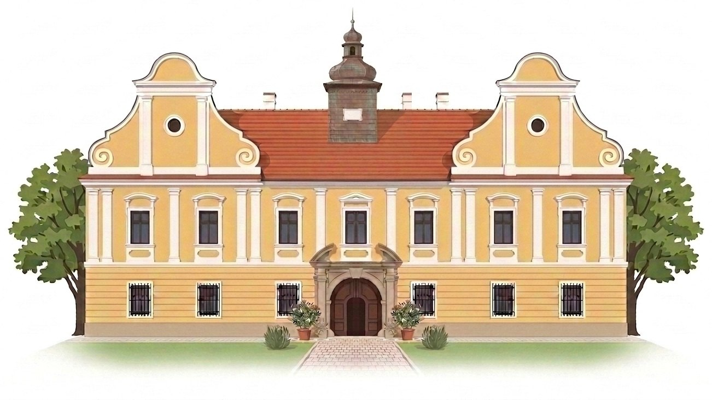

Občanská datová analýza hospodaření
Prštice v číslech
Obec s historií od roku 1289, dnes 997 obyvatel v zázemí Brna, hospodaří zhruba s 24 miliony Kč ročně. Prošli jsme její rozpočty a účetnictví — a několik věcí stojí za pozornost.
Osobní projekt Petra Novotného, občana Prštic — není to oficiální web obce a autor v komunálních volbách nekandiduje.

Zjištění v procesu
Sedm zjištění z veřejných dat
Každá dlaždice vede na podrobný rozbor s doklady.
- 12. z 12obcí v okolív čerpání dotací na rozvoj — obec o ně přestala žádat↓
- přes 50 tis. Kčměsíčně (2025)za právní služby — doložení faktur musel nařídit až kraj↓
- 22 500 Kčměsíčněza pověřence GDPR — běžná cena je ve stovkách korun↓
- +74 %od roku 2019výdaje na vodu a odpadní vody↓
- +82 %od roku 2019výdaje na odpady — poplatky kryjí už jen 40 %↓
- 3 pokutypravomocnéod ÚOHS za neuveřejněné smlouvy o zakázkách→
- 24,4 mil. Kčopravy 2020–2025z vlastních peněz — rozpis jsme si vyžádali↓
Vše z veřejných zdrojů a z podkladů poskytnutých obcí; zdroje jsou uvedené u každého rozboru. Je dobře možné, že obec tato zjištění vysvětlí a ukáže se, že je vše v pořádku — z dat, která zatím máme, to posoudit nejde, proto je vedeme jako „stojí za pozornost“. Jakmile vysvětlení nebo dokumenty dostaneme, popis upřesníme, doplníme — nebo opravíme. Nejde o hodnocení — o webu.
Hlavní zjištění: dotace
Závažné zjištění
Prštice přestaly žádat o dotace — jako jediné v okolí
Zatímco sousední obce si za dotace stavěly chodníky, školky, hřiště a hasičské zbrojnice, Prštice o dotace prakticky přestaly žádat. Obce kolem se díky nim rozvíjejí, Prštice na to rezignovaly. A není to tím, že by sousedé jen doháněli kanalizaci — tu má osm z devíti nejbližších obcí hotovou stejně jako Prštice.
12. z 12
skončily Prštice v čerpání dotací na obyvatele mezi okolními obcemi — na posledním místě. Počítány všechny přijaté transfery 2019–2025 dle MONITORu
33,8 mil. → 1,0 mil.
Kč získala obec na dotacích v letech 2012–2018 a pak v letech 2019–2025. Dřív to uměla
0 Kč
z evropského programu LEADER — obec jako jediná z okolí není v MAS Bobrava
Co si za dotace pořídili sousedé: Střelice novou školku za 65 mil., učebny ZUŠ za 12,6 mil., chodníky a cisternovou stříkačku, Ořechov školu, školku a chodníky za 23 mil., Mělčany přestavbu brownfieldu za 31 mil., chodníky za 18 mil. a nový vrt s vodojemem, Radostice rekonstrukci ulice, stezku do Ořechova a dětské hřiště, Moravské Bránice hasičskou zbrojnici, komunikace, obecní dům a fotovoltaiku, Želešice sběrný dvůr, dětské hřiště a přestavbu objektu Viktorka, Nebovidy chodník podél silnice a třídění odpadu, Silůvky lesnickou techniku. Prštice za sedm let stromy, výstroj pro hasiče a kompostéry.
Celý rozbor: srovnání dvanácti obcí, projekty rok po roce a co z dat nevíme ↓
A díváme se dál: největší nákladový účet obce — 24,4 mil. Kč za opravy a udržování — zatím nemá veřejný rozpis. Vyžádali jsme si ho ↓
Jak si Prštice stojí v okolí
Komentář autora — možná vysvětlení
Podprůměrné příjmy na obyvatele mohou mít víc příčin. Jednou z nich je, kolik obec získává z dotací. V členění příjmů tvoří přijaté transfery 1,2 % až 7,3 % příjmů ročně — jsou v tom ale všechny transfery včetně provozních, které dostává každá obec víceméně automaticky (příspěvek na výkon státní správy, peníze pro školu, na volby). Na vlastní rozvojové projekty získaly Prštice za sedm let 2019–2025 jen zhruba 1 milion Kč — a ve srovnání s okolními obcemi skončily poslední z dvanácti, přestože se v něm počítaly všechny transfery, tedy metodikou pro obec nejpříznivější. výpočet
Vyšší průměrný věk zase často souvisí s tím, jak atraktivní podmínky obec nabízí mladým rodinám s dětmi — především kolik nové výstavby umožňuje. Územní plán Prštic přitom platí v původní podobě z roku 1999. Obce, kam se mladé rodiny stěhují, v průměru mládnou; Prštice rostou stěhováním, ale nemládnou.
Jde o interpretaci autora — možná vysvětlení, ne doložené závěry. V úvahu připadají i jiná; obojí půjde ověřit dalšími daty (srovnání dotací s okolními obcemi, tempo výstavby).
Zobrazit srovnávané obce
| Obec | Obyvatel | Průměrné příjmy | Na obyvatele |
|---|
Jak číst čísla na tomto webu — vysvětlení značek a pojmů
Značky u čísel
- zdroj Údaj je přímo v oficiálním dokumentu — výkaz, státní pokladna, ČSÚ.
- výpočet Údaj jsme dopočítali z čísel ze zdroje (součet, procentní změna, přepočet na obyvatele).
- zařazeno autorem Úsudek autora, ne oficiální údaj — třeba přiřazení účetní položky do skupiny.
- nezjištěno Údaj zatím nemáme — chybí podklad, nebo ho zdroj neuvádí.
Pojmy, které se tu opakují
- Účet 518 „Ostatní služby“
- Účetní škatulka na služby od externích dodavatelů — právní služby, IT, svoz odpadu, provoz budov. Nejsou to mzdy ani nákup majetku.
- Účet 511 „Opravy a udržování“
- Náklady na opravy majetku obce. U malých obcí bývá největším nákladovým účtem.
- Účetní náklad vs. rozpočtový výdaj
- Náklad se zaúčtuje, když služba vznikne (podle faktury). Výdaj vzniká, když peníze odejdou z účtu. Mohou spadnout do různých let, proto se nesčítají.
- Paragraf
- Označení oblasti výdaje (3113 = základní školy, 6171 = místní správa). Říká, na co peníze šly.
- Položka
- Označení druhu výdaje (platy, energie, právní služby). Říká, jakého typu výdaj je.
- Běžné vs. kapitálové výdaje
- Běžné jsou na provoz a opakují se. Kapitálové jsou investice — nákup nebo zhodnocení majetku.
- Saldo
- Rozdíl příjmů a výdajů za rok. Kladné = přebytek, záporné = schodek.
- RUD (rozpočtové určení daní)
- Pravidla, podle kterých stát rozděluje vybrané daně mezi obce. Tyto daně tvoří většinu příjmů obce.
- FIN 2-12 M
- Oficiální výkaz o plnění rozpočtu obce. Zdroj rozpočtových čísel na tomto webu.
- ÚOHS
- Úřad pro ochranu hospodářské soutěže. Dozoruje mimo jiné veřejné zakázky. Není to soud.
Sedm let hospodaření: peníze zůstávají na účtech, výjimkou byl rok 2023
Celkový pohled — kolik obec ročně přijala, vydala a kolik jí zůstává na účtech.
V roce 2023 obec vydala o 5 milionů víc, než přijala
Příjmy a výdaje — skutečnost podle výkazu FIN 2-12 M, v milionech Kč.
Zobrazit jako tabulku
| Rok | Příjmy | Výdaje | Saldo |
|---|
Zdroj: výkaz FIN 2-12 M, MONITOR MF ČR (IČO 00282405), skutečnost k 31. 12. zdroj Výdaje nejvíc vyskočily v roce 2023 (34,4 mil.), kdy obec vydala víc, než přijala.
Ověřte si to sami — 3 kroky
- Otevřete profil obce Prštice v MONITORu státní pokladny.
- V levém menu zvolte Rozpočet → Souhrnný a nahoře vyberte rok.
- Porovnejte řádky Příjmy celkem a Výdaje celkem s tabulkou výše. Čísla se mohou lišit o vnitřní převody — ty MONITOR v souhrnu odečítá.
Na účtech obce přibylo: ze 4,3 na 20,4 mil. Kč
Peníze na účtech a dluhy, stav k 31. 12. každého roku, v milionech Kč. V roce 2023 obec čerpala úvěr a od té doby splácí.
Zobrazit jako tabulku
| Rok | Peníze na účtech | Úvěry | Rozdíl |
|---|
Zdroj: rozvaha obce (účty 231 základní běžný účet, 244 termínované vklady, 261 pokladna; 451 dlouhodobé úvěry), MONITOR MF ČR. zdroj
Jak číst: peníze na účtech obce vzrostly ze 4,3 mil. (2019) na 20,4 mil. Kč (2025). V roce 2023 obec zároveň čerpala úvěr — dluh vyskočil na 11,0 mil. a obec ho od té doby splácí (8,1 mil. na konci 2025).
Komentář autora
Obec skončila v pěti ze sedmi let přebytkem a v posledních dvou letech investovala málo — kapitálové výdaje byly 1,15 mil. (2024) a 1,35 mil. Kč (2025), zatímco v roce 2023 to bylo 8,65 mil. Peníze proto na účtech zůstávaly a nahromadily se. výpočet
Těch 20,4 mil. Kč bude možné využít v následujícím volebním období — a je to skutečná rezerva, obec není zadlužená nad své možnosti. Zároveň ale platí, že nevznikla úsporným provozem: vznikla tím, že se neinvestovalo a nežádalo o dotace. Je to tedy rezerva na úkor rozvoje obce — co se z ní pořídí, přijde později a bez dotace, která k tomu mohla být přidána.
Přebytky i kapitálové výdaje jsou z výkazu FIN 2-12 M. Úsudek, že jde o odložený rozvoj, je autorův — ne doložený závěr.
Zjištění v procesu
Závažná zjištění k ověření — podrobně
Položky, u kterých má smysl znát podrobnosti. U všech tří stále čekáme na podklady od obce. Ukazujeme jen doložená data a otevřené otázky — závěr si udělá čtenář sám.
Pověřenec GDPR: 22 500 Kč měsíčně, běžná cena je ve stovkách korun
Podklady vyžádányCo víme
V roce 2025 se v účetnictví objevila nová pravidelná platba za pověřence pro GDPR — 10 zápisů po 27 225 Kč. V letech 2022–2024 tato položka v účetním detailu není. Obec uvedla, že pověřenectví je vykonáváno pro obec i pro základní a mateřskou školu. zdroj: odpověď obce (PDF)
Co jsme vypočítali
Za rok 2025 celkem 272 250 Kč. Částka 27 225 Kč odpovídá 22 500 Kč bez DPH měsíčně. V 1. pololetí 2026 platby pokračují — další 108 900 Kč. Celkem tak obec za pověřence od začátku roku 2025 zaplatila už 381 150 Kč. výpočet
Co zatím nevíme
Rámcovou smlouvu, sjednaný rozsah plnění a dodavatele této konkrétní služby. V účetnictví jsou platby označované střídavě jako „GDPR“ i „právní služby“, což naznačuje souvislost s advokátní kanceláří obce — potvrdí to ale až smlouva. nezjištěno
Jak se vyjádřila obec
Sdělila, že pověřenectví pokrývá obec i školu a že náklady zahrnují i dobu od jeho vzniku v roce 2018. Rámcovou smlouvu ani rozsah plnění nedoložila.
Srovnání s trhem
Rozdíl proti běžným cenám je řádový. Veřejné ceníky firem, které pověřence pro obce nabízejí, uvádějí pro obce do 1 000 obyvatel měsíční paušál ve stovkách korun — například od 250 Kč, resp. od 600 Kč měsíčně. Obec Prštice platí 22 500 Kč bez DPH měsíčně, tedy zhruba třicetkrát až devadesátkrát víc.
Pro představu, co je to za částku v rozpočtu obce této velikosti: externí pověřenec stojí obec víc než dvojnásobek toho, co dostává její vlastní místostarosta — tomu zastupitelstvo schválilo odměnu 10 000 Kč měsíčně (usn. č. 13/2022/Z1). výpočet
Na základě toho, co zatím víme, se tato služba jeví jako výrazně předražená. výpočet
Co by to mohlo vyvrátit: pokud by smlouva ukázala výrazně širší rozsah plnění, než jaký běžné ceníky pokrývají, byl by rozdíl vysvětlitelný. Proto o smlouvu a popis rozsahu žádáme — naše domněnka se potvrdí, nebo vyvrátí až podle toho, co obec doloží. Do té doby jde o indicii, ne o závěr. zdroj veřejné ceníky poskytovatelů, ověřeno 26. 8. 2026
Otázky k dosledování: Jaký je sjednaný měsíční paušál a co přesně zahrnuje? Kdo službu dodává? Proběhl před uzavřením smlouvy průzkum trhu nebo oslovení více dodavatelů?
Právní služby: 2,1 milionu za čtyři roky — podrobnosti musí obec doložit
Kraj rozhodl v náš prospěchCo víme
Na účtu 518 jsou v letech 2022–2025 náklady na právní služby ve výši 2 094 182 Kč. Obec uvedla, že je poskytuje advokát Mgr. Radovan Vrbka, na základě usnesení zastupitelstva č. 271/2010/Z26 z 11. 3. 2010, za ceny podle advokátního tarifu. zdroj: odpověď obce (PDF)
Co jsme vypočítali
Po letech: 292 244 → 583 224 → 601 452 → 617 262 Kč. Od roku 2023 se náklady drží kolem 600 tis. Kč ročně; v 1. pololetí 2026 dalších 313 364 Kč. výpočet
Co zatím nevíme
Kterých konkrétních věcí se služby týkaly, jaká byla sjednaná sazba a kolik hodin práce za částkami stojí. nezjištěno
Jak se vyjádřila obec
Uvedla, že právní služby jsou poskytovány komplexně — zastupování před správními orgány a soudy i příprava a revize smluv. Konkrétní doklady neposkytla.
O co jsme žádali a jak to dopadlo
Abychom částkám rozuměli, požádali jsme obec 1. 7. 2026 (text žádosti, PDF) o podklady, které je doloží:
- konkrétní faktury za poskytnuté právní služby,
- smlouvu o dílo nebo rámcovou smlouvu, na jejímž základě jsou služby hrazeny,
- výkazy práce, které by fakturované částky podložily.
Obec tyto podklady neposkytla — odpověděla pouze slovním sdělením bez dokumentů (č. j. OUPR-867-2026, PDF). Proti tomuto postupu jsme 17. 7. 2026 podali stížnost ke Krajskému úřadu Jihomoravského kraje jako nadřízenému orgánu.
Krajský úřad nám dal 19. 8. 2026 za pravdu. Rozhodnutím č. j. JMK 123854/2026 přikázal obci žádost vyřídit ve lhůtě do 15 dnů od doručení rozhodnutí. Proti rozhodnutí se nelze odvolat. zdroj rozhodnutí KrÚ JMK (PDF)
Podrobnosti k právním službám tedy obec bude muset brzy doložit. Až je dostaneme, doplníme je sem.
Otázky k dosledování: Za co obec platí řádově 600 tis. Kč ročně? Kolik hodin práce za tím stojí a jaká je hodinová sazba? Souvisí náklady se soudními spory, které obec vede? Vazba na konkrétní řízení zatím není doložena.
Největší nákladový účet obce: 24,4 mil. Kč za opravy — rozpis jsme si vyžádali
Zákonná lhůta do 9. 9. 2026Účet 518, který je na tomto webu podrobně rozebraný, není největší nákladový účet obce. Tím je účet 511 „Opravy a udržování“. Jeho podrobný rozpis zatím nemáme — 25. 8. 2026 jsme o něj obec požádali.
Co víme
Za roky 2020–2025 obec zaúčtovala na opravy a udržování celkem 24,4 mil. Kč. Nejvyšší náklady připadly na rok 2022 (7,8 mil. Kč), druhé nejvyšší na rok 2023 (5,6 mil. Kč). zdroj výkaz zisku a ztráty
Co jsme vypočítali
Jen za roky 2021–2023 jde o 17,4 mil. Kč — víc než jedenapůlnásobek toho, co ve stejných letech prošlo účtem 518. výpočet
Co zatím nevíme
Prakticky vše o skladbě. Neznáme dodavatele, jednotlivé částky ani to, co se opravovalo. nezjištěno
Co jsme udělali
25. 8. 2026 jsme obec požádali o rozpis účtu 511 za období od 1. 1. 2020 do 30. 6. 2026 — dodavatel, předmět plnění, datum a částka u každé položky, ve strojově čitelném formátu. Text žádosti (PDF)
Co bude dál: zákonná lhůta pro vyřízení je 15 dnů, tedy do 9. 9. 2026. Jakmile data dostaneme, projdeme je stejným způsobem jako účet 518 a zveřejníme je zde — včetně dodavatelů a konkrétních částek.
Zdroj čísel: účetní deník účtu 518 poskytnutý obcí (2022–2025 a 1–6/2026) zdroj. Zařazení zápisů do skupin je zařazeno autorem podle krátkých popisů; deník neobsahuje dodavatele ani smlouvy. Tržní srovnání je orientační a slouží jako indicie, ne jako důkaz. Hlubší hodnocení hospodárnosti patří do samostatné autorské sekce, která je označená jako názor autora.
Datové zjištění
Sedm let prakticky bez dotovaných projektů
Zatímco okolní obce stavěly za dotace chodníky, školky a hasičárny, Prštice o peníze prakticky přestaly žádat. A dřív to uměly.
Zlom přišel po roce 2018
Vlastní projekty obce — bez peněz, které jen protékají škole, a bez nárokových příspěvků od státu.
2012–2018
33,8 mil. Kč
na sedmi projektech — obec žádala a získávala.
- Biocentrum Pod Horkou — 16,3 mil.
- Protierozní a protipovodňová ochrana — 9,9 mil.
- Zateplení základní školy — 2,5 mil.
- Úpravy veřejného prostranství — 2,3 mil.
- Hřiště u školky — 1,3 mil.
- Vrt pro vodovod — 0,9 mil.; osvětlení — 0,6 mil.
2019–2025
1,0 mil. Kč
na třech projektech — stromy, hasičská výstroj, kompostéry.
- 2019 a 2020 — nula
- 2021 — výsadba stromů 96 tis.
- 2023 — věcné prostředky hasičům 75 tis.
- 2024 — kompostéry a štěpkovač 789 tis.
Období 2012–2018: databáze CEDR (centrální evidence dotací) zdroj. Období 2019–2025: rozpočty obce v MONITORu, ověřeno proti smlouvám a webu obce zdroj. Do částek nepočítáme šablony pro školu (2022 a 2025, celkem 1,6 mil. Kč) — o ty žádá škola a obci neprocházejí rozpočtem jako její projekt — ani covidovou kompenzaci 1,24 mil. Kč z roku 2020, kterou dostaly všechny obce automaticky podle počtu obyvatel. výpočet
V přepočtu na obyvatele jsou Prštice poslední z dvanácti
Dotace na projekty za roky 2019–2025, přepočteno na jednoho obyvatele. Tučně sousední obce.
Zdroj: MONITOR MF ČR, rozpočty obcí — třída 4 bez nárokových a průtokových položek (příspěvek na výkon státní správy, covidové kompenzace, platby mezi obcemi) zdroj výpočet. Přepočet na obyvatele je tu nutný, protože obce mají od 315 do 3 554 obyvatel.
Kdo v kterém roce něco získal
Každý čtvereček je jeden rok. Čím tmavší, tím víc peněz obec získala; prázdný znamená nulu.
Námitka „sousedé jen dohánějí kanalizaci“ neobstojí
Nabízí se vysvětlení, že okolní obce staví to, co Prštice mají dávno hotové. Data ho nepotvrzují:
Jenže ze sledovaných obcí měla kanalizaci hotovou před rokem 2019 osmička z devíti. Jediná vodohospodářská velká akce v období je rekonstrukce dosluhující čistírny v Radosticích (31,5 mil. Kč). Všechno ostatní jsou chodníky, školky, hřiště, hasičské zbrojnice, veřejné osvětlení, fotovoltaika, sběrné dvory a zeleň — tedy věci, o které mohly Prštice žádat také.
Zdroje: karty Plánu rozvoje vodovodů a kanalizací JMK pro jednotlivé obce, registr smluv, weby obcí zdroj. Pokud bychom Radosticím jejich jedinou velkou akci odečetli, dostaly by se na úroveň zhruba 2 500 Kč na obyvatele — tedy k Pršticím. U ostatních obcí to neplatí.
Na co brali dotace sousedé
Přehled hlavních projektů 2019–2025. Ukazuje, o jaké peníze se dá žádat i bez velké stavby.
Zdroje: databáze dotací Hlídače státu a CEDR, registr smluv, weby obcí zdroj. Přehled je výběr hlavních položek, ne úplný seznam.
Prštice jako jediná z okolí nejsou v místní akční skupině
Místní akční skupina (MAS) rozděluje mezi své obce evropské peníze z programu LEADER — typicky na menší projekty v řádu statisíců.
MAS Bobrava sdružuje třináct obcí v okolí Bobravy: Modřice, Moravany, Nebovidy, Omice, Ořechov, Ostopovice, Popůvky, Radostice, Silůvky, Střelice, Troubsko, Želešice a od roku 2020 i Hajany. Prštice mezi nimi nejsou, přestože leží uprostřed tohoto území.
Odpovídá tomu i rozpočet: Radostice, Silůvky, Nebovidy, Střelice, Želešice i Moravské Bránice mají v letech 2019–2025 dotace z programu LEADER (od 66 tisíc do 450 tisíc Kč). Prštice nemají z LEADERu ani korunu.
Co zatím nevíme: zda Prštice patří do jiné místní akční skupiny, nebo do žádné, a proč. Nepodařilo se nám to zjistit z veřejných zdrojů. nezjištěno
Zdroj: seznam členských obcí MAS Bobrava, databáze dotací zdroj.
Co z dat nevíme
Nevíme, o co obec žádala neúspěšně. Ministerstva ani fondy nezveřejňují seznamy nepodpořených žadatelů, takže z veřejných dat nelze zcela vyloučit, že obec žádala a neuspěla. Je to ale málo pravděpodobné: malé obce si žádosti běžně nechávají zpracovat od specializovaných firem a úspěšnost bývá napříč obcemi podobná. Kdyby Prštice žádaly tak často jako sousedé, něco by za sedm let uspělo. nezjištěno
Nevíme, jestli obec dotace nepotřebovala. Nízké čerpání může znamenat i to, že obec neměla co stavět. Proti tomu ale stojí, že ve stejné době vydala miliony z vlastních peněz na opravy — a právě detail těchto oprav (účet 511) jsme si vyžádali.
Komentář autora
Čísla neukazují jednorázový výpadek, ale trvalý stav od roku 2019. Obec, která mezi lety 2012 a 2018 získala na dotacích téměř 34 milionů, jich za dalších sedm let získala na vlastní projekty jeden. Rozdíl proti okolí přitom nevzniká velkými stavbami, ale desítkami běžných menších projektů — chodníky, hřiště, osvětlení, technika pro hasiče — o které Prštice nežádaly.
Schopnost získat pro obec peníze zvenčí dnes patří k tomu, podle čeho se posuzuje kvalita vedení obce. Rozpočet malé obce sám o sobě na rozvoj nestačí; okolní obce to vědí a o dotace opakovaně žádají. Když obec dlouhodobě nežádá, nabízejí se dvě vysvětlení a ani jedno pro ni nevyznívá dobře.
První: je to práce navíc. Podat žádost, projekt uřídit, vyúčtovat a udržet po dobu udržitelnosti dá práci, kterou si vedení obce ušetří tím, že o dotace nepožádá. Jenže vedení obce je placené z rozpočtu, tedy z peněz všech obyvatel — a očekává se od něj, že obec bude rozvíjet, ne že na rozvoj rezignuje, protože je s ním práce navíc.
Druhé: dotovaný projekt s sebou nese kontrolu. U dotace prochází zadání zakázky, výběr dodavatele i vyúčtování kontrolou poskytovatele a dalších kontrolních orgánů; chyba se trestá vrácením peněz. Obec, která staví a opravuje výhradně z vlastního rozpočtu, se takové vnější kontrole nevystavuje. Nabízí se tedy i vysvětlení, že si vedení obce nepřeje, aby jeho hospodaření kdokoli zvenčí kontroloval. A že vnější kontrola není samoúčelná, ukazuje zkušenost samotných Prštic: u posledního velkého dotovaného projektu v roce 2017 dostala obec finanční opravu za pochybení při zadání zakázky — a v letech 2023–2025 byla třikrát pravomocně pokutována ÚOHS za neuveřejnění smluv, které ukládá zákon o zadávání veřejných zakázek. Všechny tři pokuty se přitom týkaly akcí a smluv hrazených bez dotací — pravidla se porušovala, i když se zvenčí nikdo nedíval.
Které z těch vysvětlení platí — nebo jestli platí obě, či žádné — z dat nepoznáme.
Jde o interpretaci autora, ne o doložený závěr; motiv z čísel vyčíst nelze. Vysvětlením může být i personální kapacita úřadu.
Výdaje, které rostou rychleji než celý rozpočet
Celkové výdaje obce vzrostly od roku 2019 zhruba o třetinu. Těchto pět položek roste výrazně rychleji — a tady je, co k tomu z veřejných dat víme a nevíme.
Zdroj všech řad: výkaz FIN 2-12 M, MONITOR MF ČR, skutečnost 2019–2025 zdroj. Výběr témat je zařazen autorem — vybrány jsou položky s nejvýraznějším růstem; čísla samotná pocházejí ze zdroje. Běžné ceny, bez odečtení inflace.
Nakupované služby: za deset let víc než dvojnásobek
Účet 518 je účet, kam obec účtuje služby od externích dodavatelů: právní služby, IT, svoz odpadu, provoz budov. Nejsou to mzdy ani nákup majetku.
Ze 2,0 na 4,7 milionu ročně — s vrcholem 5,8 mil. v roce 2023
Zobrazit jako tabulku
| Rok | Účet 518 | Meziroční změna |
|---|
Ověřte si to sami — 3 kroky
- Otevřete profil obce v MONITORu.
- Zvolte Účetní výkazy → Výkaz zisku a ztráty a vyberte rok.
- Najděte řádek A.I.12. Ostatní služby — to je účet 518. Hodnoty jsou v tisících Kč.
Meziroční skoky tvoří hlavně ČOV, zámek a odpady
Rozklad odpovídá na otázku „co tvoří rozdíl“ — ne na otázku, proč obec službu objednala. Účetní detail máme od roku 2022.
Co z deníku nevíme: neobsahuje jména dodavatelů, smlouvy ani faktury. Zařazení zápisů do skupin je zařazeno autorem podle krátkých popisů. Lze z něj proto doložit, co tvoří rozdíl, ale ne vždy skutečný důvod, rozsah služby nebo přiměřenost ceny.
Pozor: rozpočet a účet 518 nejsou totéž
Na webu jsou dva různé pohledy na peníze. Nesčítáme je a neporovnáváme jejich součty jako stejný údaj:
Příklad: obec dostane v prosinci fakturu za službu — náklad spadne do účtu 518 daného roku, ale peníze odejdou z bankovního účtu až v lednu, tedy do rozpočtu dalšího roku.
Rozklikejte si rozpočet až na jednotlivé položky
Kam peníze šly — a odkud přišly. Vyberte rok.
Kam šly peníze
Zdroj: FIN 2-12 M, MONITOR MF ČR, skutečnost k 31. 12. zdroj. Rozdělení do oblastí je zařazeno autorem; agendy (paragrafy) a druhy výdajů (položky) jsou podle rozpočtové skladby. Součet oblastí odpovídá celkovým výdajům roku (případný rozdíl 1 Kč je ze zaokrouhlení).
Odkud peníze přišly
Zdroj: FIN 2-12 M, MONITOR MF ČR, skutečnost k 31. 12. zdroj. Většinu příjmů tvoří daně přerozdělené státem — na jejich výši obec nemá vliv. Vlastní prostor má hlavně u daně z nemovitých věcí, místních poplatků a příjmů z vlastní činnosti a majetku.
Proč má obec příjem z hazardu, když v ní není herna? Část výnosu daně z hazardních her se rozděluje všem obcím podle stejného klíče jako podíl na dani z příjmů právnických osob (tedy hlavně podle počtu obyvatel) — bez ohledu na to, zda se v obci hraje. Jen část vázaná na automaty připadá obcím, které mají povolené herní pozice. zdroj zákon č. 187/2016 Sb., Finanční správa
Zajímá vás jiný rok? Zobrazí se ve stejném členění.